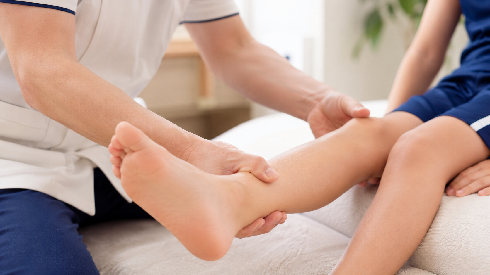
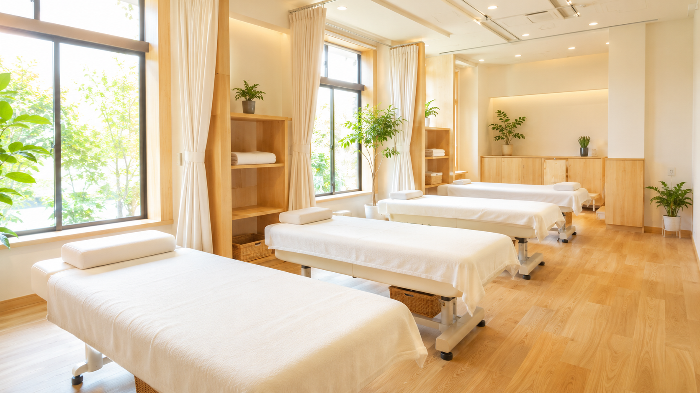

PR ｜ サンプル記事
さくら整骨院
整骨院・整体
名古屋市中区
「頑張る子の体を、ケガから守りたい」
成長期のスポーツキッズに寄り添う整骨院。
少年団やクラブで毎日のように体を動かす子どもたち。楽しい一方で、成長期ならではのケガや体の使い方の悩みもつきものです。名古屋市中区の「さくら整骨院」は、そんなスポーツを頑張る子どもとその家族に向き合ってきた地域の整骨院。今回はその想いと取り組みを取材しました。
「同じ捻挫でも、大人と成長期の子どもではケアの仕方がまったく違うんです」。そう話すのは、さくら整骨院の院長です。子どもの骨や関節は発達の途中にあり、大人と同じ感覚で無理をさせると、その時は治っても将来の動きやすさに影響が残ってしまうことがあるといいます。
だからこそ、さくら整骨院では施術の前の「聞き取り」を何より大切にしています。どの競技を、週に何回、どれくらいの強度でやっているのか。今どこが、いつから、どんなときに痛むのか。練習や試合のスケジュールはどうなっているのか——。一人ひとりの状況をていねいに把握したうえで、その子の体と生活に合った施術と、家でできるセルフケアまでをセットで提案してくれます。

さくら整骨院がとくに力を入れているのが、ケガの予防とコンディショニングです。試合前の体づくり、大会が続くシーズン中の疲労ケア、オフ期の体の整え方まで、年間を通したサポートに対応しています。
「整骨院って、痛くなってから駆け込む場所だと思われがちなんです。でも本当は、ケガをしないために通ってほしい」と院長。練習後のストレッチの仕方、体の使い方のクセ、シューズの選び方といった日々の習慣まで踏み込んでアドバイスしてくれるのは、地域で子どもたちを長く見てきたからこそ。少年団やクラブからの「チームでまとめて体のチェックをしてほしい」という相談に応じた実績も多数あるそうです。
Q. どんなお子さんが通っていますか？
サッカーや野球、バスケ、ミニバスを頑張る小中学生が中心です。「痛みはないけど体の使い方を見てほしい」という予防目的の子も増えています。
Q. 保護者へのサポートで意識していることは？
お子さんの体の状態と、家でやってほしいケアを、その場でしっかりお伝えすることです。お母さん・お父さんが安心して見守れる状態をつくるのも、私たちの仕事だと思っています。
Q. 地域の子どもたちへの想いを教えてください。
スポーツを好きでい続けてほしい。そのために「体が理由で諦める」ことだけは減らしたい。それがいちばんの願いです。
「子どもが一人で行くのは不安」という声に応え、保護者の付き添い・見学を歓迎しています。施術の内容や、家でのケア方法をその場で共有してくれるので、「結局なにをすればいいの？」と迷うこともありません。家庭でのサポートにそのままつながるのが、通い続ける親子から支持されている理由です。
学校やクラブの帰りに立ち寄りやすい立地と、夜まで対応している受付時間も、習い事や部活で忙しい子育て世帯にはうれしいポイント。「送り迎えのついでに寄れる」気軽さが、継続のしやすさにつながっています。

「ミニバスのあとに膝を痛がることが増えて相談しました。ケアの方法を家でもできるように教えてもらえて、本人も安心して続けられています。」